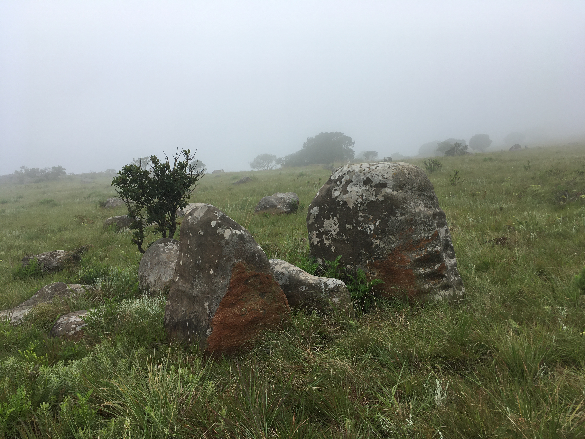

split/mountain
Probably one of the websites I visit most is a blog called BLDBLG , by Geoff Manaugh. He writes about architecture and the built environment on topics related to geology, archeology, acoustics, subterranean spaces, science fiction, and history etc
My paintings are mostly of mountains ive hiked to and visited, mostly South Africa and a bit of Europe. While mainly pretty rigorous Geoff’s writing often has a speculative angle and casts far out questions into landscape futures which I find thrilling.
"...but it would be some new form of plowing in which the furrows you produce are not for seeds but for data. An entirely new landscape design process results; a fragment of earth formatted to store encrypted files. data gardens can even be read by satellite. planet as archive."
Planet as archive is not such a far out idea though, im more interested in stone as archive.
Here's a clip of Derek Jarman's 1971 short film of his journey around the stones of Avebury ~ ‘A Journey to Avebury’. The original is silent but this version is with a restored soundtrack by UK band COIL, who were commissioned to make a score in the 90’s. The original is also 8 min long but COIL were given permission by Jarman’s estate to slow it down. Jhonn Balance of COIL says, “The night I saw the film on video I met Derek in a dream and asked if we could slow it down to half speed. "Of course," he said. So we did.” Lol. Although this clip is from an unofficial edit, and still a bit of a Super 8 rough diamond, it’s been remastered with higher quality audio by Phil Barrington who has made it permanently available on Archive.org.
I grew up going to a place called Adams calendar not far from where I lived. If you try ignore the name and sensation around 'South Africa's Stonehenge' the stones felt different there, or I willed them to be different. Either way, these willful human projections are interesting to me
I like visiting standing stones, neolithic sites. Places where stones have been chosen and placed with what seems to be some specific intention. Resonant properties of certain stone, astronomical alignment, vibes. In 2021 I attended a talk at the Akademie der Kunst in Berlin, where artist Natasha Tontey spoke about a piece called The Epoch of Mapalucene . Its a work I think about often, which explores native Indonesian cosmology through the stone-revering Minahasan peoples, bringing together in an alternate geological timescale, animate and inanimate realms.
On the note of seasonal observations and experiences of a life lived awake, my friend Steve Shapiro writes beautiful Haiku
/
Here, a recent interview about my paintings / 2024
Can you tell us about your painting process?
I paint with oil on board, I prefer board for its hard, smooth untextured surface and the way stiff-bristled brushes leave scrappy marks. The dimensions I like are rarely bigger than
a large chessboard which makes the gestures I use both tight and loose. At times I paint quite quickly and try not to overthink the marks, kind of like trying to catch a scent on the wind. This is all to say I don’t have set
schedules or times for painting but rather find myself in seasonal painting cycles. I tried painting en plein air for a bit but found the logistics cumbersome and instead developed a way to
infuse more memory and feeling into the process from a distance.
How do you choose a location to paint?
I usually paint from photographs and memory of places i've been. I lived for a while in the Western Cape in South Africa and for a good chunk of time spent most weekends in the mountains. These early trips really
forged in me a sensitivity to the quality of feeling I experienced in those remote spaces. From then on and now living in Europe, I travel to mountains and use this material to paint from. The locations aren’t
always so specific, but tie in to larger travel plans and ventures I might find myself in. For some reason I seem to be drawn to the more exposed rock surfaces and features, something about the character and light-play appeals to my sense of geologic drama.
Is there a place you’ve painted that feels particularly important? If so, where/why?
I guess all the places have different qualities of importance. I'd say paintings of mountains in South Africa are closest to my heart, it's where I spent a lot of time with close friends, and have had many formative personal
experiences. The Cederberg, Agtertafelberg, Winterhoek, Matroosberg and of course Table Mountain are all steeped in a mix of interpersonal relationship dynamics and at the same time many moments of loneliness too. Another important trip was to Namibia with my good friend Anna in 2018, where we spent a bit of time in some of the most stark and contorted landscapes i've ever been in. Another important aspect to being able to travel to the mountains and have the unfettered freedom to be in them comes with the awareness of access, and how my position as a white South African has afforded me opportunities to be able to be in these spaces with ease. I think a lot about the historical sediments of the places I go, the mute geology and silent witnessing that is so present for me in landscape, of stories not given voice and credibility but still very much there and baked in. An example of this is the history of the Herero and Nama Genocide carried out by the German colonial project between 1904 and 1908 in Namibia. Robert Macfarlane says that dissonance is produced in any landscape that enchants in the present but has been a site of violence in the past. I think a lot about these hidden remnants.
We’ve also admired your sculptural work, how does your sense of sculpture influence your painting?
I'd say that my painting developed as a bit of a practical and necessary offshoot to my sculptural practice. Sculpture seems to be a bit more ‘agony and ecstasy’ compared to the quick free-flowing painting process, and so I found that I had a more immediately satisfying way of world-building in painting. In my painting practice I find a quieter more personal form of expression to the ‘harder’ questions I try to answer through sculpture. My painting is like the soft and welcoming underbelly to the exposed surfaces that brace themselves against the elements. Sounds dramatic, but basically both creative realms involve stone, the one just feels a bit more vulnerable and dreamy.
How does your creative process fit into your daily life?
My creative process is mostly seamless with my daily life, except when I have to deal with German bureaucracy, I find my wellspring of inspiration dwindles pretty quickly. That said, I do think that creativity somehow thrives on friction and so being able to innovatively adapt has become part of my creative game too. My life is so varied and dynamic, which is kind of by design, and so I feel I'm constantly looking for ways to challenge my preconceived ideas about whats going on around me. In my paintings I think this come through more simply with how I enjoy playing with colour and form and sometimes like pushing things to the edge of abstraction.
We see your attention to stone/geology in both your paintings and your sculptures, what has attracted you to this material?
Would it sound weird if I said I feel it in my bones? It’s a hard question to answer straightforwardly, or at least not without sounding like a Druid, but on the surface I guess it’s a material i've always just had an affinity for. From a young age I've always kept stones close; collections of them, climbed them, shaped them. On a deeply embodied level I love feeling the resistance of working with stone, and in that choreography of give and take, two histories are negotiating with each other, my own accumulation of time and experience and that of the stone’s. It’s kind of a wild thing to think about, where geologic time intersects with human time.
